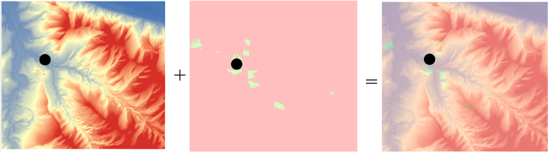

14 Historical GIS
GIS can completely reframe your questions. - Ian Gregory
Developing Historical Datasets
Digitization and Georeferencing
Analyze Historical Data
Historical GIS (HGIS) is used across various social sciences, including geography, history, and archaeology, to address questions about the past and to track changes over time. HGIS uses tools such as digitization and georeferencing to transform historical data into a digital and spatial format, allowing researchers to organize, analyze, and visualize temporal data. By combining when and where, HGIS helps individuals and organizations to better understand geographical patterns and relationships of the past, to make sense of the present-day landscape, and to predict future trends.
The recent spatial turn, an academic movement that emphasizes place and space across the humanities, has led to an increasing number of historians taking advantage of all the new tools offered by GIS to answer old questions. The increasing use of GIS by scholars, as well as all of the advancements in the software, continues to advance historical scholarship in three key areas. First, it challenges widely accepted, established viewpoints by providing new evidence or through the re-evaluation of old evidence. Second, HGIS tackles unresolved questions from the past. Third, it provides approaches that enable scholars to ask completely new questions and reframe old questions.
HGIS is used to study a wide range of topics, including population shifts, environmental changes, urban development, and the evolution of political boundaries. By combining data from various historical sources, such as census and other demographic records, documents and maps, and literary references, and linking it to spatial layers featuring environmental data, land use/land cover, and topographic features, HGIS allows teachers and researchers to ask and explore new questions about how geographical conditions influenced historical events. By reconstructing historical landscapes, scholars can present history in its geographical context, giving their audience a deeper understanding of the motivations, opportunities, and challenges that influenced past decisions and actions.
One innovative example comes from geographer Anne Kelly Knowles (2013), who used GIS to recreate the Battle of Gettysburg with the help of digital terrain construction and analysis tools. Using renderings of historic roads and lanes, fence lines, property boundaries, and buildings as they stood in 1863, as well as a digital elevation model (DEM) developed for Adams County, Pennsylvania, Knowles was able to create an interactive map of the Battle of Gettysburg based on what Confederate general Robert E. Lee would have been able to see when making the decision to launch an assault on Union forces, often considered a major turning point in the American Civil War, leading to the ultimate victory of the Union. In reconstructing the battlefield, Knowles gives Lee’s decision geographic context, helping to explain his actions and decisions that fateful day.
14.1 Developing Historical Data
Historical data comes from either primary or secondary sources. Primary sources include firsthand accounts, such as maps, official documents, photographs, journals/diaries, and letters. These primary sources provide direct evidence of historical events and experiences. It is important to note that while some primary sources may be well-preserved, many historical documents have deteriorated over time. If they are worn, torn, or otherwise have missing parts, these incomplete records may be difficult to access or analyze. Secondary sources, on the other hand, are analyses and interpretations of primary sources. These may include books, scholarly articles, and documentaries.
There are two main methods in developing historical data into a usable format for an HGIS project. The first is to simply use existing historical data that has been converted to a digital format. These existing data layers can be downloaded, usually with no charge, from sources like the National Historical Geographic Information System (NHGIS), which provides historical U.S. Census data and boundary files from 1790 to the present; the David Rumsey Historical Map Collection, a collection of georeferenced historical maps from around the world; and Google Earth and Google Maps, whose collections feature a variety of historical data and imagery. While searching for and finding appropriate data can be a challenging and frustrating process, the power of HGIS lies in its ability to easily incorporate historical data from multiple sources.
The second method, digitization and georeferencing, requires a bit more work, but gives the user more agency in ensuring they have the exact data they want for the project. Digitization is the process of converting historical geographic data, like old maps and documents, into a digital format that can be used for spatial analysis. There are two primary methods of digitizing: Heads-Up and Heads-Down. Heads-Up, or On-Screen, digitization involves scanning paper maps into digital images and then creating new data layers by tracing the features directly on a computer screen. Heads-Down, or Manual, digitization tracing geographic features by hand using a digitizing tablet and a special mouse-like device called a puck to trace features, which sends the coordinates to the GIS software. There is also automatic digitization in which the GIS software automatically converts raster images (scanned maps or aerial imagery) into vector data. This method, however, often requires additional, specialized software.
Once the data has been digitized, it needs to be georeferenced. Georeferencing is the process of aligning a scanned map or aerial image to a known coordinate system. This process involves manually adding control points that link locations on the scanned map or aerial image to their corresponding locations on the surface of the earth. The number of control points needed varies by project, but a minimum of three is often required to accurately align a map or image to its real-world location. In general, adding more control points, particularly those spread evenly across the image, improves the accuracy of the final georeferenced product. Creating and ensuring accurate control links is a crucial step in digitizing maps, images, and other data, as the placement of the control link points directly affects the accuracy of any spatial analyses.
Some historical data sources may also include descriptions of locations, such as addresses or place names, that users can geocode to their real-world locations. Geocoding is the process of taking a text-based description of a location and determining its geographic coordinates. This process gives users the ability to accurately place locations on a digital map, making it possible to visualize text-based data and turn it into informative visual representations. Furthermore, by assigning geographic coordinates to text-based information, users can take advantage of the GIS software’s spatial analysis tools to identify spatial patterns, trends, and relationships that aren’t easily identifiable through text alone. There are free online geocoding tools, including those provided by the US Census Bureau and Geoapify, which have the ability to geocode addresses from Excel tables, text files, and through copy and pasting addresses from a list.
14.2 Analyzing Historical Data
Once historical data has been converted into a digital format and georeferenced or geocoded to its real-world location, users can begin layering data from different time periods to examine historical relationships and patterns. For example, the Bomb Sight interactive map project (2011-2012), which shows the location of bombs dropped on London during World War II, was created at the University of Portsmouth from a combination of digitized and georeferenced maps from the National Archives (United Kingdom), testimonials from the British Broadcasting Corporation (BBC), and historical images from the Imperial War Museum. Those who interact with the map can explore where and when the bombs fell, see the damage caused, and read the accounts of survivors.
Teachers and researchers can use a variety of GIS methods and techniques to analyze historical data. One crucial set of tools involves interpolation methods. These methods use known measurements at studied locations to analyze and predict values or outcomes for locations where data has not been collected or is otherwise missing. Of course, HGIS projects may require their own methods that go beyond just spatial interpolation to fill in any gaps in historical data. For this, users can take advantage of spatiotemporal interpolation, which adds a temporal dimension, estimating unknown values at both unsampled locations and times. These methods are useful in tracking population movements, the spreading of diseases, and physical changes to the landscape across both space and time.
Another important tool is viewshed analysis Figure 14.1. Like the aforementioned example of Anne Kelly Knowles’ GIS-recreation of the Battle of Gettysburg, viewshed analysis allows for the reconstruction of visual landscapes of the past when combined with historical GIS data, such as elevation models and maps. Viewshed analysis can be an important teaching and/or researching method as it helps reconstruct how people perceived their surroundings, helping to explain decisions made and actions taken. While especially useful for military or defensive studies, viewshed analysis is also beneficial in studies on the visual impact of historic sites, such as castles or temples.

There are also a variety of spatial analysis techniques that can be used in HGIS. Pattern and trend analysis helps users identify patterns and understand how they have changed over time. For example, one could analyze how population density and distribution or land use/land change has evolved in a specific area. This is also an example of spatial-temporal analysis, which combines spatial and temporal data to track changes in an area over a specific period. HGIS techniques also include proximity analysis, which is used to measure distances between features. When users apply this analysis to historical data, one can examine how both space and time influence past events. For example, visualizing the distances between settlements and water sources or fertile land can help explain why some areas were more densely populated.
14.3 Using HGIS in the Classroom
With the right methods and techniques, HGIS is able to visualize dusty archives and scattered historical documents. Not only does this make for a more exciting presentation, but it offers teachers and students the opportunity to be active in the creation and interpretation of course material. As it relates to active learning, the ultimate goal of using HGIS in the classroom is for teachers to design and present multiple layers of information that intersect with historical events, helping to promote connections between history and other disciplines, while students use critical spatial and temporal thinking skills to construct map projects that address historical questions or problems.
One excellent resource is StoryMapJS. This is not to be confused with ArcGIS StoryMaps, which may require a paid ArcGIS Online account to access advanced features. StoryMapJS is a free online tool designed to help users tell stories that highlight the locations of a series of events. Examples of StoryMaps that teachers could use in their courses include “Southern Literary Trail,” which links southern works to the places that influenced them; and “US Westward Expansion”, which maps the mean center of population from each decennial census. These particular examples give students the opportunity to use spatial and temporal information to contextualize historical works and demographic shifts.
Another great example is OpenHistoricalMap¸ a community-led, collaborative online project that creates a historical map of the world using OpenStreetMap technology. Users can scroll around the world and view places as they were at different times. Both teachers and students can contribute their own data to the community map, or they can create specialized projects. While an account is needed to use the software, it is free for all.
There is also “Geographically-Integrated History: GIS for Historians and Historical Social Scientists,” a training manual that can be downloaded for free from academia.edu.
14.4 References
Gregory, Ian N., and Richard G. Healey. 2007. “Historical GIS: Structuring, Mapping and Analysing Geographies of the Past.” Progress in Human Geography 31:5.
Knowles, Anne. 2014. “The Contested Nature of Historical GIS.” International Journal of Geographical Information Science 28:1, 206-211,
Knowles, Anne, and Amy Hillier. 2008. Placing History: How Maps, Spatial Data, and GIS are Changing Historical Scholarship. ESRI Press, Redlands, CA.
Piovan, Silvia. 2019. “Historical Maps in GIS.” The Geographic Information Science and Technology Body of Knowledge
Radinsky, Joshua, Ben Loh, and Jason Lukasik. 2008. “GIS Tools for Historical Inquiry: Issues for Classroom-Centered Design.” History and Computing XI(2).